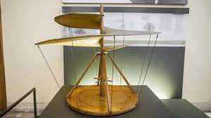

Historia de la evolución de los aviones Se atribuye al matemático y filósofo griego Arquitas de Tarento, amigo de Platón, la rara invención, hacia el año 400 a.C., de una paloma mecánica. Según parece se mantenía en suspensión impulsada por una oculta corriente de aire que actuaba en su interior.

La paloma de Arquitas, es el precedente más antiguo existente acerca del avión y el vuelo de algo más pesado que el aire. Y, que nada tiene que ver con los míticos Dédalo e Ícaro. Pero experimentos de este tipo no tuvieron continuación en el mundo clásico. En el año 1420, en pleno Renacimiento, el ingeniero y médico veneciano Giovanni Fontana diseñó un pájaro capaz de volar. Impulsado éste por un cohete oculto entre sus plumas artificiales. Se trataba de un uso primitivo de la propulsión a reacción (avión a reacción), y fue un ingenio que causó gran sensación, como también la causaron otros. Pero fueron raros experimentos dentro de la historia de los aviones, de los que hoy tenemos constancia gracias a que quedaron plasmados en dibujos y formulaciones teóricas de aspiraciones. Sueños que perviven en raros manuscritos. Se podría considerar que el primer precursor del vuelo del hombre fue Leonardo da Vinci (1452-1519).
Acaso este inventor (entre muchas otras cosas) de la ciudad italiana de Florencia conoció estos precedentes cuando inventó la máquina voladora, que estaba concebida de tal forma que el piloto moviera las alas con las manos y los pies, y la cola con la cabeza. Da Vinci, inventó una especie de helicóptero, con un ala en espiral que se “enroscaba” en el aire. El principio era el mismo que el de los modernos helicópteros. En el transcurso de casi tres siglos (hasta el XIX), no cesaron los intentos de volar llevados a cabo por toda clase de hombres valerosos y algunas veces fanáticos. Éste es, en efecto, el período que separa a Leonardo de los primeros intentos serios para volar efectuados por la técnica moderna.